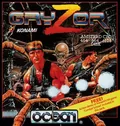
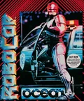
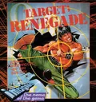

S1
Teclado virtual
Sale de lo pendiente en Amstrad CPC.
Bien si: el teclado virtual se abre con Y y B pulsa la tecla elegida.
No hay juegos con ese nombre.
Pruebas
Marca cada prueba al hacerla. Se guarda en este móvil. Al acabar, pulsa Enviar resultados y pégamelos.
0 de 5 hechas
Sale de lo pendiente en Amstrad CPC.
Bien si: el teclado virtual se abre con Y y B pulsa la tecla elegida.
Bien si: con el marco de Amstrad (Amstrad-CPC.cfg) la imagen del juego queda bien encuadrada, sin cortar los marcadores.

Que 1P empiece la partida, como hacía B.
 | Moverse |
 | Saltar |
 | Saltar hacia abajo |
 | Disparar |
 | Tecla 2: dos jugadores (por turnos) |
 | Abrir el teclado virtual (tecla F9). Pulsa Coin para activar el puntero; el joystick lo mueve y B pulsa la tecla |
 | Tecla 1: un jugador |
| + | Quedarse quieto y disparar |
| + | Agacharse y disparar |
 | Empezar la partida (hace de fuego) |
 + +  | Salir del juego |

Que el joystick mueva a RoboCop a los lados (ahora pulsa también las teclas Q, A, K y L), qué hacen arriba y abajo, y qué botón pasa de la pantalla de inicio.
| Moverse |
| Subir escaleras · apuntar arriba |
| Agacharse |
| Disparar · dar un puñetazo |
 | ESPACIO (disparo con teclado) |
| Tecla 2 |
| Abrir el teclado virtual (tecla F9). Pulsa Coin para activar el puntero; el joystick lo mueve y B pulsa la tecla |
| Tecla 1 |
| ENTER |
| + | Salir del juego |

El jugador 2 todavía no va (su joystick no responde y su puñetazo hace pegar al jugador 1). Pulsa X (opción 3 del menú) y apunta qué opciones salen para el jugador 2: joystick o teclado, y qué teclas. Si ahí no salen las teclas, abre el teclado virtual (Y, luego Coin para el puntero) y pulsa el 4.
 | Mover |
| Golpear (con dirección, distintos golpes) |
| ESPACIO |
| Tecla 2 |
| Abrir el teclado virtual (tecla F9). Pulsa Coin para activar el puntero; el joystick lo mueve y B pulsa la tecla |
 | Tecla 3 |
| Tecla 1 |
| ENTER |
| + | Salir del juego |
No hay pruebas con este filtro.